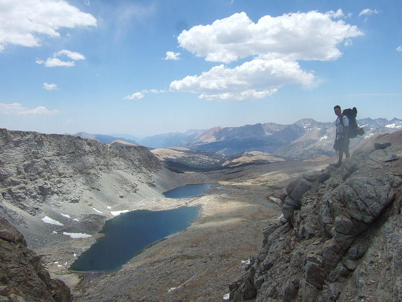

Pacific Crest Trail
Don and June Mulford made the first verifiable equestrian Thru-Ride of the PCT in 1959.[53][54][55] In that year the Pacific Crest Trail stretched a poorly marked 2,400 miles from Mexico to Canada. More concept than footpath, the trail was an oft-broken, high-ridge track disappearing regularly from map and terrain. On April 19, 1959, on an empty scrub sage plain seven miles east of Tijuana, with four horses, Don and June Mulford began their journey north to the Washington–Canada border. The Mulfords went to Hollywood for three months immediately after the ride and were featured on network television.
